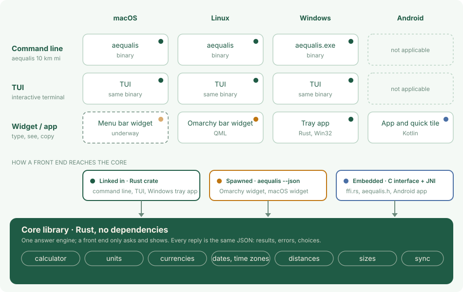

Architecture
Aequalis is one core library in Rust and a thin front end for each place you use it. The core answers; a front end only asks and shows. So a unit, a date or a time zone is worked out the same way on a Mac, a Linux bar, Windows and a phone.

The core library
Plain Rust with no dependencies, which keeps the binary small. It holds everything that makes up an answer: the calculator, units, currencies, dates and time zones, distances, shoe and clothes sizes, and the data sync. A request goes in as text; a reply comes out as JSON holding the results, the errors, or the choices to ask the user when a request can be read in more than one way.
Three kinds of front end
| Kind | What it is | Where |
|---|---|---|
| Command line | aequalis 10 km mi, --shell for a prompt, --json for programs | macOS, Linux, Windows |
| TUI | the interactive terminal mode, the same binary with no arguments | macOS, Linux, Windows |
| Widget or app | a small window you type in, then copy the answer | Linux (Omarchy bar widget), Windows (tray app), Android (app and quick tile); macOS is underway |
How a front end reaches the core
Three bindings, one core
Which one a front end uses depends on what its platform can do.
- Linked in. The command line, the TUI and the Windows tray app use the library as a Rust crate.
- Spawned. The Omarchy widget is QML: it runs
aequalis --jsonon each keystroke and shows the reply. The macOS widget will do the same. - Embedded. The Android app is Kotlin. It loads the core as a shared library through a C interface (
ffi.rs,aequalis.h) with a small JNI bridge, and has the downloader of the app plugged in, since an app cannot startcurl.
Speed and memory
Small and quick, because the core does everything in memory with no runtime to start. Measured on a laptop with an 11th Gen Intel Core i7-1185G7 (Linux, release build, the binary is 1.8 MB). Each request is a new process, which is how the widget uses it; it includes starting the program, reading the settings and the answer.
| Request | Time to reply (median of 60) | Memory (peak) |
|---|---|---|
12+12/3 | 3.4 ms | 13.5 MB |
10 km mi | 4.0 ms | 13.5 MB |
12 usd eur | 2.8 ms | 13.5 MB |
44 it us (shoes and clothes) | 3.3 ms | 13.5 MB |
18E6 unix | 3.1 ms | 13.5 MB |
10:00AM Paris to New York | 3.7 ms | 13.5 MB |
now Rome Tokyo | 3.5 ms | 13.6 MB |
Italy Japan (distance) | 3.3 ms | 13.6 MB |
In a prompt (aequalis --shell) or in an app, the program is already running, so a request is only the work itself: 1,000 mixed requests took 112 ms in total, about 0.1 ms each, with the memory staying at 13.6 MB.